¡Únete a los SuperHeels!
Nueva partidaCómo jugar: usa las teclas de flecha para mover las fichas. Cuando dos zapatos se tocan, ¡mejoran!
Una bailarina azul abre el estante en el 2 y una mula de plataforma arcoíris lo cierra en el 2048. Entre medias: una sandalia verde con tobillera, un tacón bordado fucsia, un tacón amarillo con plataforma, un tacón estampado leopardo, una sandalia negra de charol, un tacón de lunares, una sandalia azul de tiras, un botín verde con purpurina y un tacón de pata de gallo. Desliza la estantería de 4×4 con las flechas o el dedo; dos pares idénticos se convierten en el modelo siguiente y suman puntos. Deja casillas libres y piensa por delante, porque un tablero lleno sin parejas termina la compra. La mula arcoíris es el par que hay que alcanzar.
Leyenda de fichas:
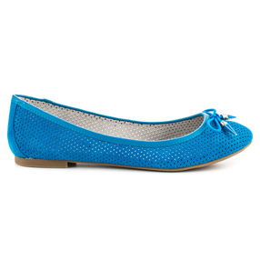
bailarina azul
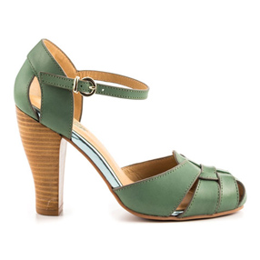
sandalia verde con tobillera
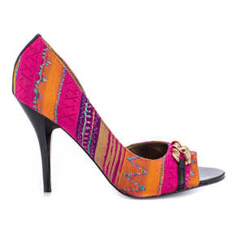
tacón bordado fucsia
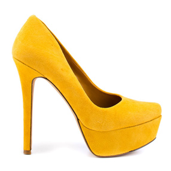
tacón amarillo con plataforma
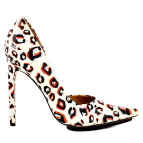
tacón estampado leopardo
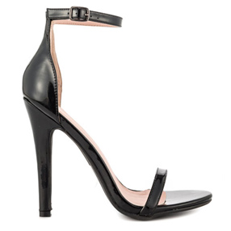
sandalia negra de charol
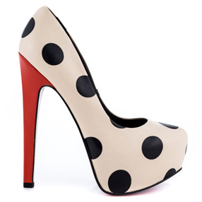
tacón de lunares
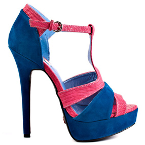
sandalia azul de tiras
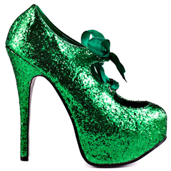
botín verde con purpurina
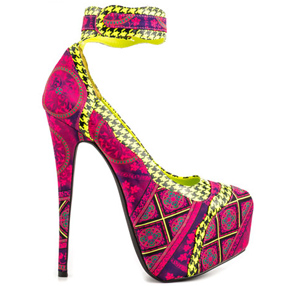
tacón de pata de gallo
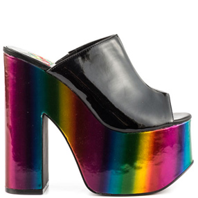
mula de plataforma arcoíris
Nota: Una variante creada por aficionados de 2048, el juego original de Gabriele Cirulli.
Imágenes de zapatos por Heels.com.